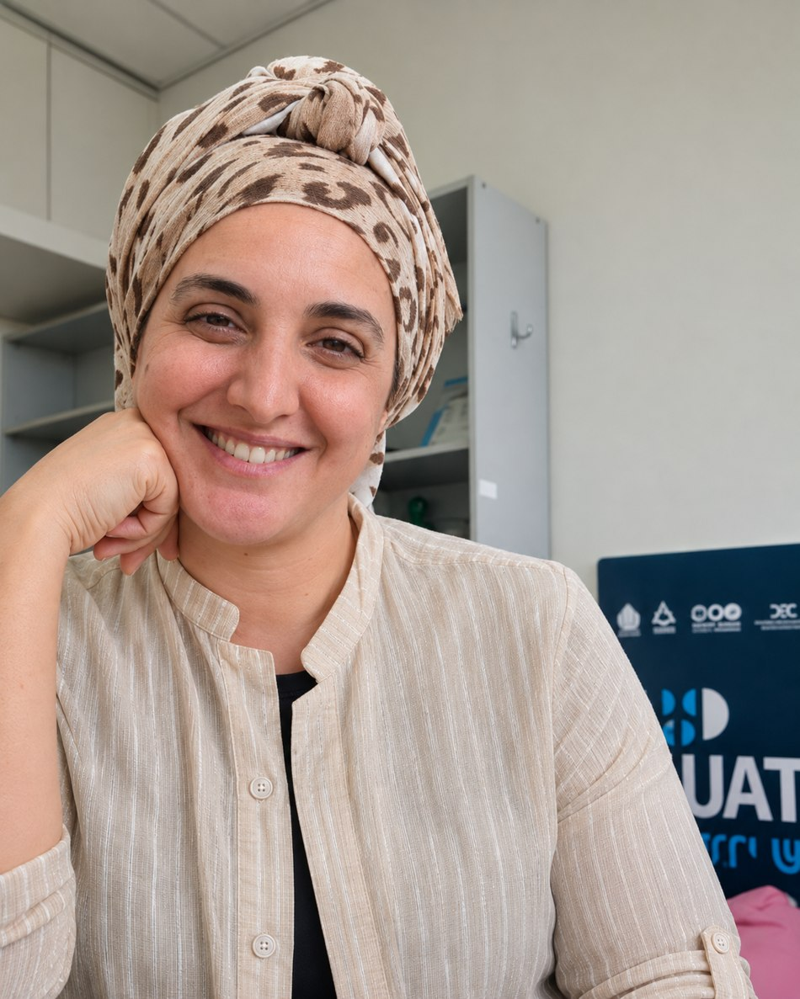

Applied Economics · Cybersecurity
Dana
Etgar-Itzhaki.
PhD Candidate in Economics · Tel Aviv University
I am a PhD candidate in Economics at Tel Aviv University. My research focuses on the economics of cybersecurity, studying how firms respond to cyber threats and make decisions about security investments, technology adoption, and risk.
More broadly, I am interested in economic behavior, incentives, and behavioral algorithms. My future research explores competition and market structure in cybersecurity markets.

Research
Research
Working Papers
How Do Cyber Attacks Impact Corporate Balance Sheets and Income Statements? An Empirical Study
How do cyber incidents affect firms' financial performance and balance-sheet decisions? Evidence from firm-level financial data.
The Impact of Ransomware Attacks on Security Portfolios: Firm-Level Panel Data
SSRN ↗ · CEPR Discussion Paper ↗
How do ransomware attacks change firms' cybersecurity technology portfolios?
Work in Progress
Knowledge Worker Strategy: Effort Dynamics in Cybersecurity Crowdsourcing
Effort allocation, researcher quality, and the returns to diversification in bug bounty markets.
Swarm Intelligence in Human Behavior: Evidence from Crowdsourced Security Markets
Modeling collective behavior and adaptive search using swarm-based algorithms, including particle swarm optimization (PSO).
Why Bayesian Persuasion Is Not a Game
Future Research
Competition, market structure, and technology adoption in cybersecurity product markets.
Teaching
Teaching
My teaching experience is primarily in Principles of Economics and Microeconomics.
I am currently developing a course titled Economics of Cybersecurity: Theory and Applications, which will examine cybersecurity through economic models and empirical evidence.
Curriculum vitae
Academic CV
My academic CV is available as a PDF.
Contact
Let's connect.
For academic correspondence, research collaborations, and seminar invitations: